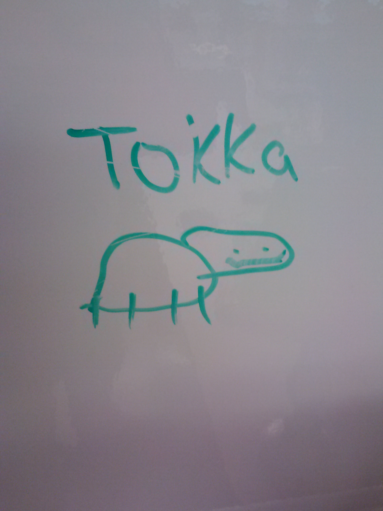

Who is Mr. Floyd?

A graduate of Temple University's innovative TUteach program, Mr. Chase Floyd is a passionate, dedicated, and engaging science teacher who strives to go above and beyond to provide his students with an effective, exciting, and unique educational experience! Nicknamed "Chef Floyardee" by his student scientists, Mr. Floyd loves science and he promises to work as hard as he can everyday to make sure his students do as well!

Floydisms
The following is a list of "Floydisms" aka classroom concepts created by Mr. Floyd that only his students would understand!
- DO NOW
- QP (Qualitative Prompt)
- AO (Academic Objective)
- H-Dub (Homework)
- Judging by the volume, it looks like we're wrapping up the DO NOW
- SO!
- Can I have a volunteer read the QP and AO for the class!
- "Open books, work on today's-"
- "No...the AO is on the bottom..."
- CAPITALIZING words for added EMPHASIS!
- KA2 Format (Know, Asked, Answer)
- #Akila
- "Let the Units Guide You!"
- So we wanna know #BigScientificQuestion
- GET EXCITED!!!
- Fun Scientific Phrase of the Day
- QUICK LAB
- Com-pe-ti-tion...QUICK LAB!
- DEMO DOWN!
- Tech-te-tech-tech-te-tech-tech-tech tech-know-led-gy CHEX!
- VID CITY!!@!
- VOLAB (Vocab Lab)
- Re-re-re-REcord That!
- Sci-ence Art-work! #ReadingRainbow
- Lab Experiement UP...up...up..!
- In-quir-eee!
- Jot-this-down! (Jot-Down Notes)
- Bah-ring...Bring-In's Lab!
- GAME-TOWN
- Bell 2 Bell #WeWorkWhatInThisClass
- Just Chefin' 👨🍳
- Cooking Up DO NOWs and QPs
- Mini-Floyardees
- Tokka
- Lichen Hunting
- Calculators are Brought to You by our Proud Sponsor, W.B. Mason!
- What the J?!
- HIGHLIGHT/ANNOTATE/UNDERLINE
- Blue Marks
- SO!...for a little BLUE!...
- Blue Mark Special #BlueIsAtSTEAK
- The RANDOMIZER
- Parking Lot Questions
- Scientific Minds
- Mad Sweater Collection
- I have to wear long-sleeved sweaters...to cover up my tatoos!
- I was born in 1958..no...really...!
- Covering the Clock with Science
- SGS (Study Guide Slide)
- Vocal Quizzes that do not involve Talking
- Read Rule #3 for the Class...
- Dot Smiley-Face
- HAVE FUN AND SCIENCE ON! 😀
- Anything and everything POSITIVE in our world!
Hobbies, Interests, and Favorite Things

Student Portraits of Mr. Floyd